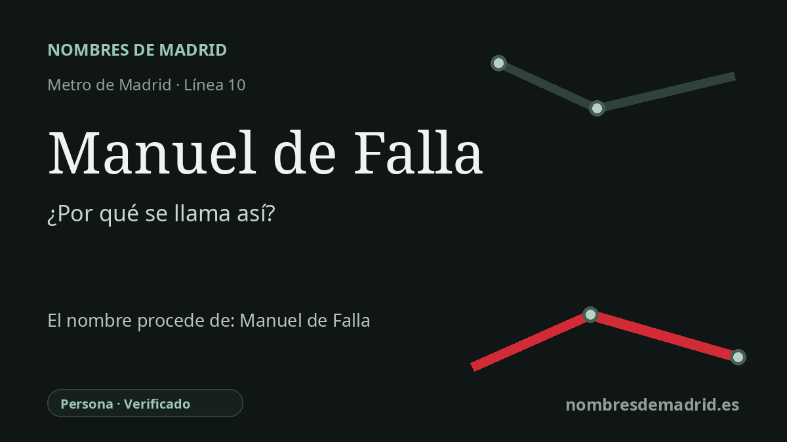

Publicado el · Investigación de Nombres de Madrid · Cómo verificamos cada origen · 7 fuentes consultadas
Respuesta rápida
La estación de Manuel de Falla toma su nombre de la calle Manuel de Falla de Alcobendas, dedicada a Manuel de Falla y Matheu (1876-1946), uno de los compositores españoles centrales del siglo XX. La estación se inauguró con MetroNorte el 26 de abril de 2007.
La historia del nombre
El origen directo del nombre de la estación es local y práctico: Manuel de Falla es una estación de la línea 10 en Alcobendas, y el CRTM sitúa su acceso en la calle Manuel de Falla, 59. La estación conserva así en el plano del metro el nombre de la calle próxima, que a su vez conmemora al compositor Manuel de Falla.
Manuel de Falla y Matheu nació en Cádiz el 23 de noviembre de 1876 y murió en Alta Gracia, Argentina, el 14 de noviembre de 1946. La Fundación Juan March lo presenta como el compositor español más importante del siglo XX, porque su catálogo, breve pero esencial, unió tradiciones populares e históricas españolas con un lenguaje moderno de proyección internacional.
Sus años de Madrid y París cimentaron esa reputación. La vida breve llegó a escena en Francia en 1913 y en Madrid en 1914; El amor brujo se estrenó en Madrid en 1915; Noches en los jardines de España se estrenó en el Teatro Real en 1916; y los Ballets Rusos de Diaghilev estrenaron El sombrero de tres picos en Londres en 1919, con coreografía de Léonide Massine y decorados y figurines de Pablo Picasso.
La estación pertenece a una historia urbana muy posterior. Se inauguró el 26 de abril de 2007 dentro de MetroNorte, la prolongación de la línea 10 que llevó el Metro de Madrid hacia el norte por Fuencarral, Las Tablas, Alcobendas y San Sebastián de los Reyes. En Alcobendas, el nombre musical de la calle encaja con un entorno de equipamientos culturales y cívicos, incluido el Teatro Auditorio Ciudad de Alcobendas, para el que el Ayuntamiento cita el Metro Manuel de Falla como acceso de transporte.
La etimología general está bien respaldada: es una estación de nombre personal que honra a Manuel de Falla. Lo que no queda documentado de forma directa en línea es el acuerdo municipal que asignó originalmente el nombre de la calle, por lo que la formulación más prudente es que la estación toma su nombre de la calle Manuel de Falla y que ambas remiten al compositor. No se ha encontrado ningún nombre anterior de la estación en la cronología oficial consultada.